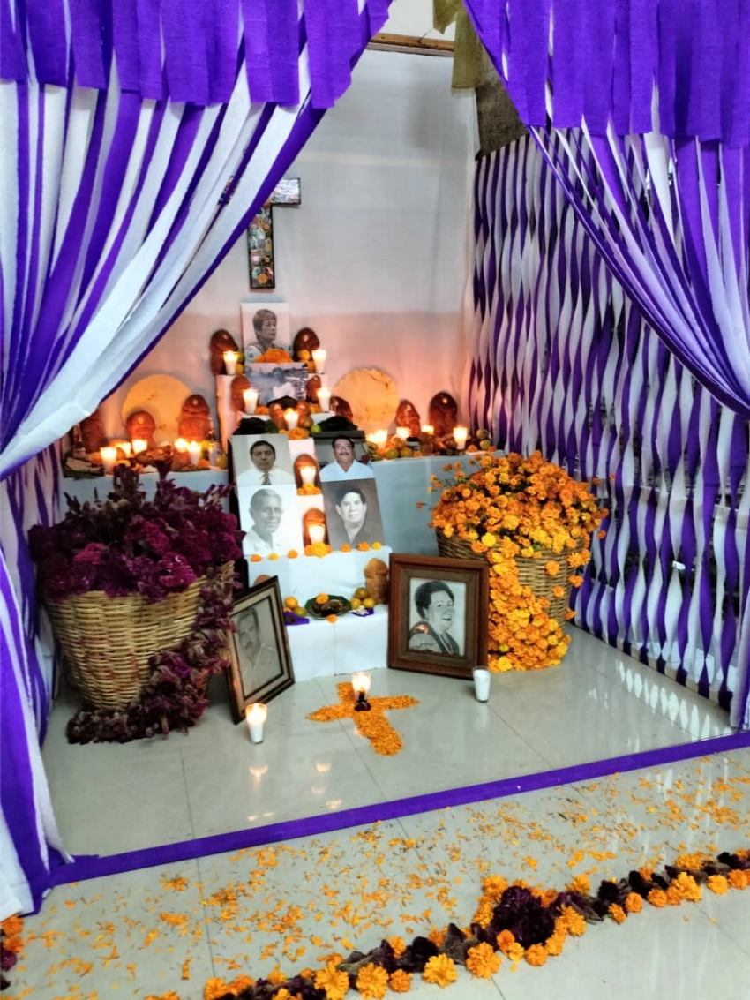
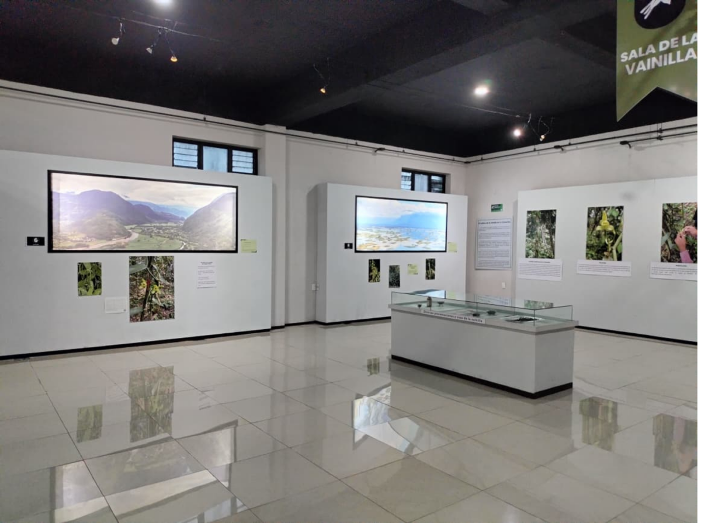
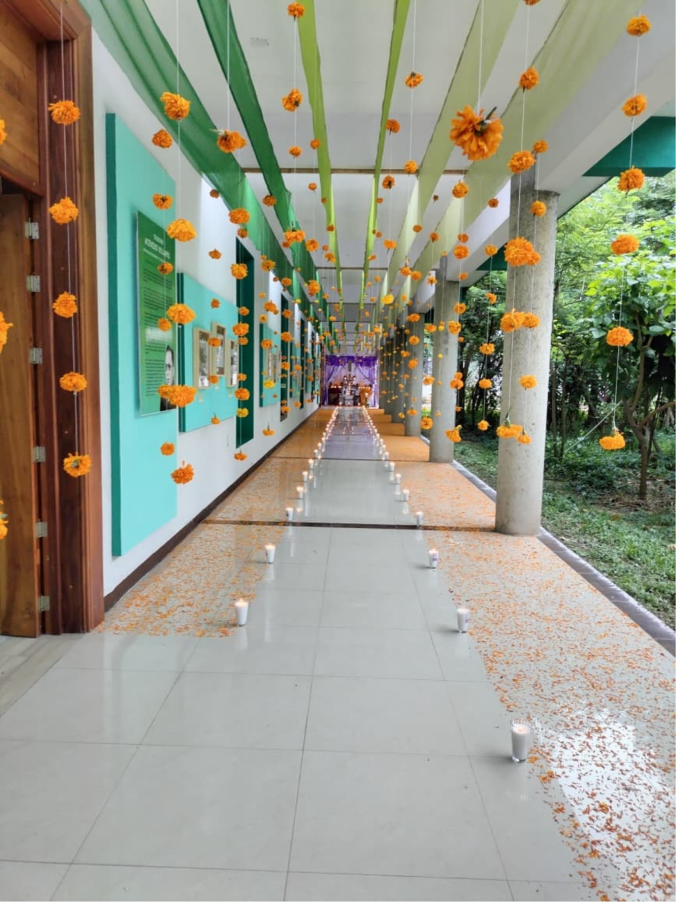
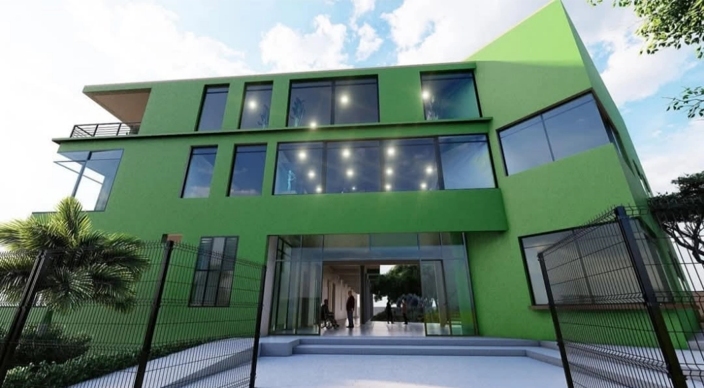
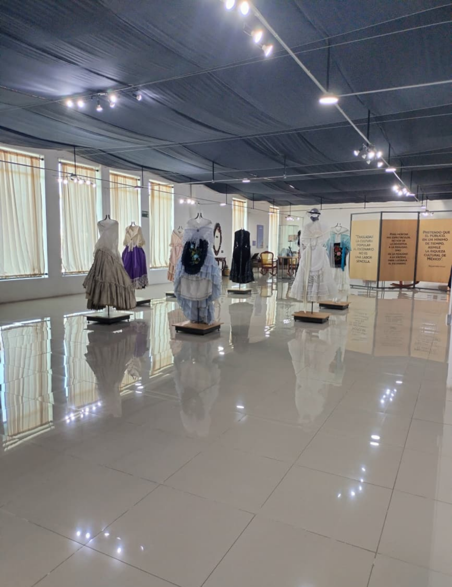
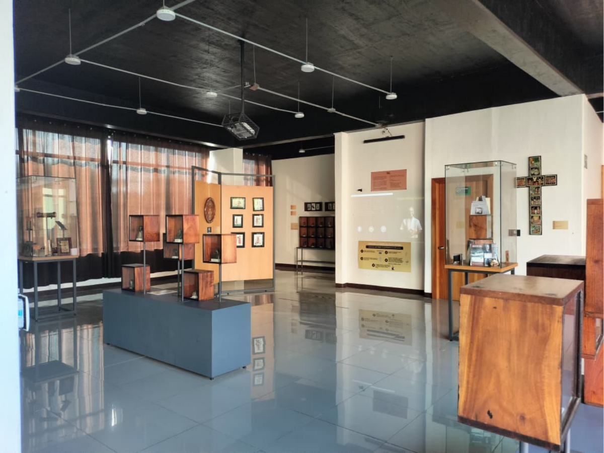

Un espacio donde el pasado y el presente se encuentran para dar vida a la identidad de nuestra región.
En el corazón de Tuxtepec, el Museo Regional Casa Verde abre sus puertas para invitarte a un viaje por la historia, la cultura y las tradiciones de nuestra región.
Cada sala, cada objeto y cada obra cuenta una historia: desde las raíces más antiguas de nuestras comunidades hasta las expresiones artísticas que hoy nos definen.
Aquí no solo se conservan piezas; se vive la cultura. A través de exhibiciones permanentes y temporales, talleres y actividades interactivas, el museo se convierte en un espacio donde el pasado y el presente se encuentran, donde el conocimiento y la curiosidad se despiertan y donde cada visitante puede descubrir la riqueza de nuestra identidad regional.
Te invitamos a recorrer, aprender y conectarte con Tuxtepec y sus alrededores, explorando un patrimonio que nos pertenece a todos y que nos invita a mirar nuestro mundo con otros ojos.





